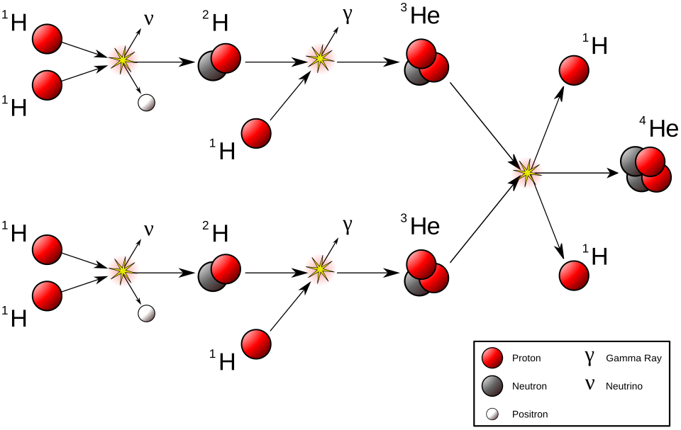

03 - Nuclear Energy
![]()
Summary
The strength of the nuclear force leads to enormous energies. These can be released when there is a change in nuclear profile. In the last section, we saw \(\alpha\), \(\beta\), and \(\gamma\) radiations with energies of the order of 1MeV. Energies of around 200MeV can be released when a heavy nucleus splits (fission), and ten times more when light nuclei combine (fusion).
In this section, we’ll look at the physical sources of these energies, specific examples of nucleear reactions involving them, and the uses they have been put to.
Contents
- Nuclear Fission
- Reasons for fission
- Spontaneous fission
- Stimulated fission
- Neutrons in fission
- Controlled fission
- Fission products
- Fission power plants
- Fission bombs
- Nuclear Fusion
Nuclear Fission
During Fission, a heavy isotope splits into two or more fragments, binding energy is released during the process. Nuclear reactors and Atomic bombs make use of this. A typical reaction is \(^1n\; +\; ^{235}U \rightarrow \;^{236}U \rightarrow \;^{141}Ba +\; ^{92}Kr + 3 ^1n\)
Approximately 200 MeV of energy is released per fission
- B/A for \(^{235}U\) = 7.59MeV, for \(^{141}Ba\) = 8.8MeV, for \(^{92}Kr\) = 7.83MeV
Reason for Nuclear Fission
Coulomb repulsion is at the heart of nuclear fission
remember, the binding energy per nucleon curve only dips down, giving a maximum around \(^{56}Fe\), when we introduce the Coulomb repulsion term
a large nucleus can deform, no longer spherical. The increase in surface energy being offset by a larger distance between protons
consider the reaction above. If the \(^{141}Ba\) and \(^{92}Kr\) nuclei are just touching, their separation will be \(1.2 \times \sqrt[3]{141} + 1.2 \times \sqrt[3]{92} = 11.66fm\)
the potential energy will be given by \(E = \frac{1}{4\pi\epsilon_0} \frac{q_1q_2}{r} \approx 250MeV\) where the charge on \(^{141}Ba\) is \(56 \times e\) and on \(^{92}Kr\) is \(36 \times e\)
Spontaneous Fission
spontaneous fission is rare, all but the heaviest nuclei (but, all the really heavy nuclei) will decay by \(\alpha\) particle emission with much higher probability
- anything with A > 300 will do this straight away
examples include \(^{238}U\), \(^{240}Pu\), \(^{252}Cf\)
the heavy nuclei will split into two daughter nuclei
\(^{252}Cf \rightarrow ^{140}Cs + ^{109}Tc + 3 ^1n\)
one daughter nucleus significantly heavier than the other
also, a batch of neutrons emitted
Stimulated Fission
rather than waiting around for spontaneous fission, we can prompt it to happen by bambarding a heavy nucleus with neutrons
\(^{235}U + ^1n \rightarrow ^{236}U\)
\(^{236}U\) is even-even and more stable than \(^{235}U\)
adding this neutron leads to a \(^{236}U\) having extra energy
B/A for \(^{235}U\) is 7.590907 MeV/nucleon, for \(^{236}U\) it’s 7.586477 MeV/nucleon
gives 6.54 MeV after absorbing neutron
enough to quantum tunnel through fission barrier
case for stimulated emission from \(^{238}U\) more complicated
again, looking to do this by absorbing a neutron
\(^{238}U\) is already even-even, \(^{239}U\) is even-odd
B/A for \(^{238}U\) is 7.570120 MeV/nucleon, for \(^{239}U\) 7.558557 MeV/nucleon
only get 4.81 MeV by absorbing neutron
not close enough to potential barrier to tunnel
absorbed neutron needs to arrive with ~1MeV extra energy
Absorbing Neutrons
slow neutrons (called thermal) much more easily absorbed
584 barns at room temperature (\(\frac{1}{40}eV\))
1 barn at 1MeV
means that fissioning \(^{238}U\) (or \(^{242}Pu\)) is much more difficult than fissioning \(^{235}U\) (or \(^{239}Pu\)).
Emitting Neutrons
this will be crucial
- difference between making a power plant or making a bomb
During fission several neutrons are emitted by each nucleus and these cause further fission
can cause a chain reaction
these are called Prompt neutrons
appear within \(10^{-12}s\) of fission
reason for neutron emmission is to maintain proton/neutron ratio appropriate for atomic mass
fission products tend to be \(\beta\) emitters
a small (~ 1%) but important number of these will emit neutrons
these are called Delayed neutrons
couldn’t regulate a power plant without them
- number of neutrons (k) that propagate reaction is crucial
- if k < 1 then reaction dies out
- if k > 1 then explosion
- if k \(\approx\) 1 then controlled power plant
Controlled Fission Power
natural uranium is 99.28% \(^{238}U\), only 0.72% \(^{235}U\)
usually need to enrich it to ~3% \(^{235}U\)
for \(^{235}U\) typically get 2.5 neutrons per fission
but these are hot neutrons, not easily absorbed
need to slow them down
slow down by collisions with light nuclei
moderator, usually water (contains \(^1H^+\)) or heavy water (with deuterium) or graphite carbon
control rods made from Cadmium can be used to absorb neutrons, keep k close to 1
surface to volume ratio important
- critical mass (about 50kg for \(^{235}U\))
Significant Fission Products
fission produces two daughter nuclei, one heavy (A ~ 140) and one lighter (A ~ 95)
the two daughter products after fission will be neutron rich
- tend to decay by \(\beta\) emission
let’s look at these in four issues:
lots, maybe 10%, of the total fission energy comes from these subsequent decays
the longer lived (\(t_{\frac{1}{2}} \approx \; years\)) fragments are hazardous waste
can interfere detrimentally with fission process. \(^{135}Xe\) is the poster-child here.
some of them can be useful
1/ \(\beta\) after heat energy
remember, about 200MeV per fission
this is followed by about 20MeV from \(\beta\) decays of fragments
problem is that this mostly happens slowly, over hours or days
when nuclear power plant is shut down (control rods fully inserted) and fission stopped, large amounts of energy is still being produced
this is what happened in Fukishima in Japan in March 2011
large earthquake and so plant was immediately shut down
but then tsunami knocked out all the cooling generators
after heat evaporated:
all the cooling water
melted the uranium cores
produced \(H_2\) gas
and all four reactor buildings exploded
2/ Hazardous Waste
most of the fission products have short (~seconds) half lives
but some not
\(^{90}Sr\) with a half life of 28 years
\(^{137}Cs\) also 28 years
\(^{99}Tc\) with a half life of 210 thousand years
\(^{129}I\) with a half life of 16 million years
the strontium particularly worrisome as it is chemically similar to calcium
3/ Reactor Poisons
~6.4% of \(^{235}U\) fissions produce \(^{135}I\)
\(^{135}I\) decays over 6.7 hours into \(^{135}Xe\)
\(^{135}Xe\) has a freakishly large neutron absorbtion cross section and a half life of 9.1 hours
means reactor can’t be restarted for several hours after a shut-down
\(^{135}Xe\) will get burnt off during normal reactor operation
but if reactor is idling at low power, \(^{135}Xe\) will build up
curtails reactor control
lead to Chernobyl tragedy
4/ Useful Fission Products
most notable are \(^{131}I\) (8 days)and \(^{132}I\) (2.3 hours)
- iodine radiation used in the diagnosis and treatment of thyroid disorders
\(^{90}Sr\) (28.91 years) can be used as an energy source
\(^{90}Sr\) emits \(\beta^-\) becoming \(^{90}Y\) (64 hours) then becoming \(^{90}Zr\) which is stable
very few \(\gamma\) rays emitted so not hard to shield all radiation
Fission Reactors
natural Uranium is about 1% \(^{235}U\) (mostly \(^{238}U\))
reactor grade is about 20% \(^{235}U\)
weapons grade is about 85% \(^{235}U\)
\(^{239}Pu\) also fissionable
4th Generation Reactors - SMR
small and modular can be transported by road
higher temperatures so more efficient
liquid salt coolant (Natrium type) can act as energy reservoir
continuous fuel feed so no need to shut down to service
\(^{238}U\) act as neutron absorber to control reaction rates
build on sites of old coal plants
cost about €3B, take ~ 10 years
typically 80-300MW per reactor
Fission Bombs
in contrast to nuclear reactors, in a bomb an uncontrolled fission chain reaction is needed
want as many neutrons as possible, and has to happen fast
- only prompt neutrons important here
need to reduce neutron losses from the surface
pellet of \(^{235}U\) needs to be big enough to reduce surface / volume ratio
typically 10kg minimum
need high purity \(^{235}U\) or \(^{239}Pu\)
need to ensure the nuclei get a chance to fission before bomb blows itself apart
- mean free path of fast neutrons in \(^{235}U\) is about 10cm
Fission bomb types
two solutions to that last problem:
gun type - \(^{235}U\) (Little Boy dropped on Hiroshima)
implosion type - \(^{239}Pu\) (Fat Man dropped on Nagasaki and Trinity test in Nevada)
in the cases above, only a few percent of the fissile material actually fissioned
- yield from explosion give by :
\((number \; of \; fission \; events) \; = \; (mass \; of \; ^{235}U) \; \div \; 235.0439 \; \times 1.6605 \times 10^{-27} \; \times \; efficiency\)
\((yield \; in\; joules) \; = \; (number \; of \; fission \; events) \; \times \; (200MeV) \; \div \; e\) Joules
\((Yield \; in \; kilotons \; TNT) \; = \; (yield \; in\; joules) \; \div \; 4.184 \times 10^{12}\) kilotons
Effect of Nuclear Bomb
blast radius in km about cubed root of enegy in kilotons TNT
at this radius get pressure wave of 1/4 bar
debris at 200 km/hr
3rd degree burns on exposed tissue
several Sv
ground burst explosions can sweep up debris combining them with fission productsand carry lethal doses of radiation for many tens of km
air bursts can spread fission proucts over even larger areas
Nuclear Fusion
now let’s look at the left hand side of the Binding Energy per Nucleon curve
can climb towards the peak of the curve by combing light nuclei to the left of \(^{56}Fe\)
this is nuclear fusion
energy gain is \(\times\) 10 higher (curve is steeper)
but have to overcome Coulomb barrrier before get close enough to combine
fusion is the energy source fueling stars, also thermonuclear weapons with destruction \(\times\) 1000 of fission weapons (megatons TNT versus kilotons)
elusive prospect of fusion nuclear power stations
limitless fuel
only short lived radiation by-products
Basic Fusion
first step
\(^1H \; + ^1H \; \rightarrow \; ^2H \; + \; e^+ \; + \; \nu \: \textbf{(Q = 1.44 MeV)}\)
note \(^2He\) doesn’t exist
second steps (the deuterium-deuterium or D-D reactions)
\(^2H \; + ^2H \; \rightarrow \; ^4He \; + \gamma \: \textbf{(Q = 23.8 MeV)}\)
\(^2H \; + ^2H \; \rightarrow \; ^3He \; + \; n \: \textbf{(Q = 3.3 MeV)}\)
\(^2H \; + ^2H \; \rightarrow \; ^3H \; + p \: \textbf{(Q = 4.0 MeV)}\)
the first of these is unlikely as the 23.8 MeV is so large is destroys the \(^4He\) nucleus. Also, \(^4He\) has no excited states to absorb some of this energy.
or the deuterium-tritium (D-T) reaction
- \(^2H \; + ^3H \; \rightarrow \; ^4He \; + n \: \textbf{(Q = 17.6 MeV)}\)
assuming the initial nuclei here have low kinetic energy, the 17.6 MeV is shared according to energy and momentum conservation giving 14.4 MeV neutrons
nice source of high energy neutrons
this mechanism is the one usually tried for fusion power plants
but tricky to extract the energy from these high energy neutrons
Fusion in Stars
want to make \(^4He\) from $ 4 ; ; ^1H$
first step, as above is:
- \(^1H \; + ^1H \; \rightarrow \; ^2H \; + \; e^+ \; + \; \nu \: \textbf{(Q = 1.44 MeV)}\)
this step is the bottleneck in the solar fusion chain
the \(\nu\) in the reaction means it must feature a weak interaction, low probability
in the core of the Sun, the temperature is about 15 million Kelvin and this gives a reaction rate of \(5 \times 10^{-18} s^{-1}\) per proton (hotter would be faster).
but the Sun’s core has lots of protons (maybe \(10^{56}\))
get \(10^{38}\) reactions per second
once deuterium formed it immediately cooks to \(^3He\)
- \(^2H \; + \; ^1H \; \rightarrow \; ^3He \; + \; \gamma \: \textbf{(Q = 5.49 MeV)}\)
we now have a mix of lots of protons (\(^1H\)), a tiny amount of \(^2H\), and some \(^3He\).
\(^3He \; + \; ^1H \; \rightarrow \; ^4Li\) won’t work as \(^4Li\) unstable
so little \(^2H\) around that’s unlikely to be encountered by a \(^3He\)
instead get \(^3He \; + \; ^3He \; \rightarrow \; ^4He \; + \; 2^1H \: \textbf{(Q = 12.86 MeV)}\)
overall process is \(4 \times ^1H \; \rightarrow \; ^4He \; + \; 2e^+ \; + 2\nu \: \textbf{(Q = 26.7 MeV)}\)
some of the 26.7 MeV lost to the neutrinos
we can account for solar luminosity of \(3.827 \times 10^{26}W\)
proton-proton cycle is engine in Main Sequence stars
Proton-Proton Cycle

Stellar Nucleosynthesis - post Main Sequence
once \(^1H\) depleted, core contracts and heats up
at ~ \(10^8\) K (ten times hotter than our Sun) the \(^4He\) - \(^4He\) Coulomb barrier can be overcome
\(^4He \; + \; ^4He \; \rightarrow \; ^8Be\)
but \(^8Be\) is unstable and disintegrates again in about \(10^{-16}s\)
Fusion Reactors
use \(^{3}T\) or \(^{2}D\) (tritium or deuterium)
\(^{2}D\) naturally occuring (1 in 6,500 water molecules)
\(^{3}T\) is not, 12 year half-life
need temperatures of about 150 million \(^{\circ} C\)
laser induced fusion (pulse of 2 MJ)
magnetic confinement (20T) in a Tokamak (doughnut shape)
Large science effort, current leaders are Lawrence Livermore in California (laser) and ITER in Cadarache in France (tokomak)
Equations
References
Nuclear Physics